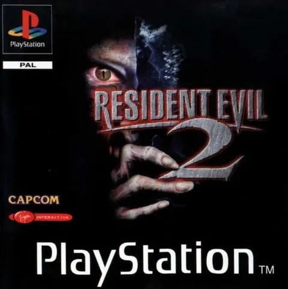
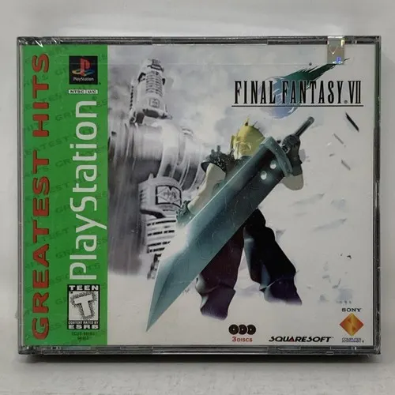
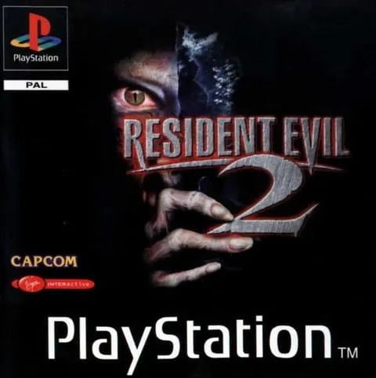
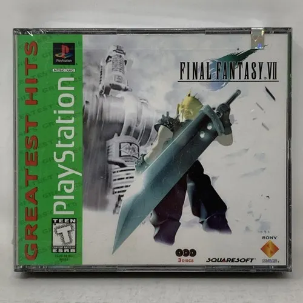

Lanzamiento: 1994 (Japón), 1995 (América/Europa)
Formato: CD
Características: Fue la primera consola de Sony. Introdujo gráficos en 3D y juegos en disco, marcando el inicio de una nueva era.
Éxito: Más de 100 millones de unidades vendidas.
Actualidad: Retrocomputación y coleccionismo.
 



Un juego de carreras con personajes de la saga Crash Bandicoot. El malvado Nitros Oxide reta a los habitantes de la Tierra a una competencia de velocidad para salvar el planeta.
Juego de lucha con una amplia variedad de personajes. Cada luchador tiene su historia personal, pero todos se cruzan en el torneo organizado por la familia Mishima.
Espionaje táctico con narrativa cinematográfica. Controlás a Solid Snake, que debe desactivar una amenaza nuclear en una base tomada por terroristas.
Survival horror ambientado en Raccoon City. Leon S. K ennedy y Claire Redfield deben sobrevivir a un brote zombie causado por una corporación farmacéutica
RPG épico. Cloud Strife y su grupo luchan contra una megacorporación y su antiguo aliado, Sephiroth, mientras descubren verdades sobre su pasado y el destino del planeta.